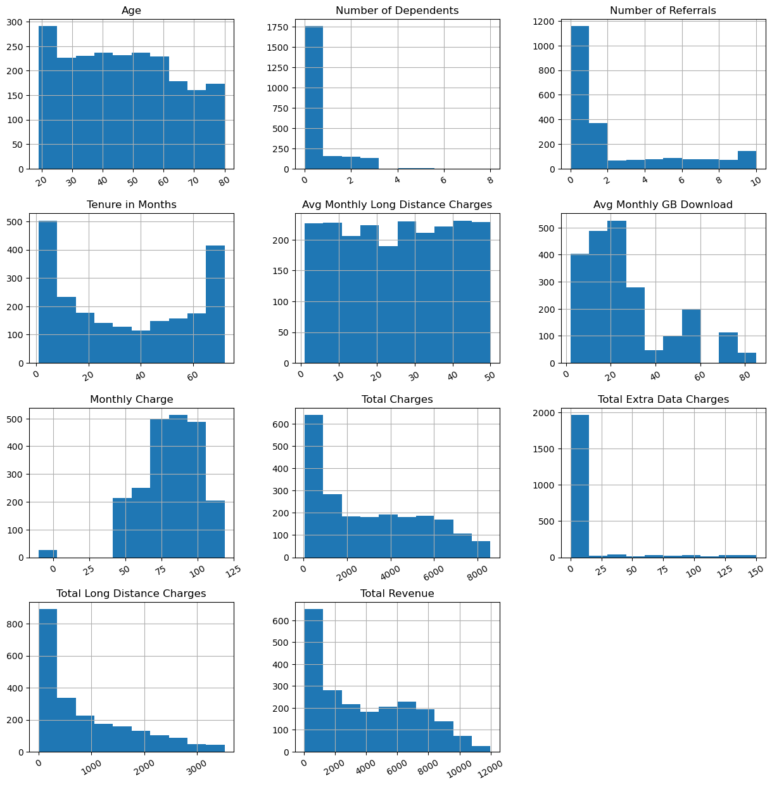
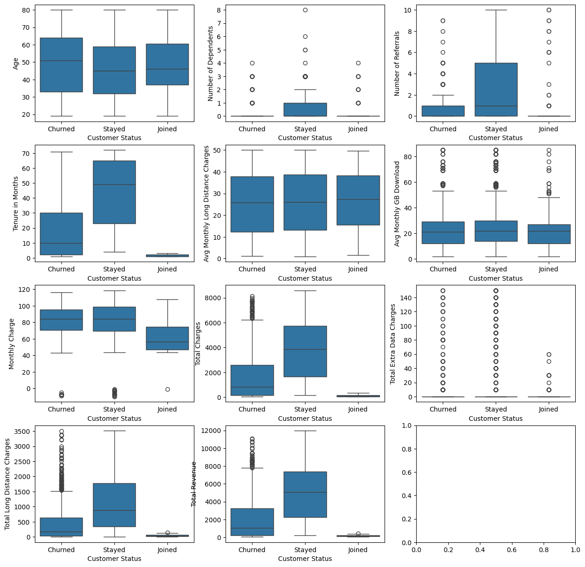

Objective
Predict which customers are likely to churn.
The project focuses on building a model that helps a telecom business identify high-risk customers and improve retention through timely intervention.
A machine learning project built to identify telecom customers at risk of churning so businesses can act earlier and improve retention.

The project focuses on building a model that helps a telecom business identify high-risk customers and improve retention through timely intervention.


Explore the churn analysis workflow, model selection, and code implementation.
Open GitHubReturn to the full portfolio and continue exploring analytics and Python projects.
Back to Portfolio